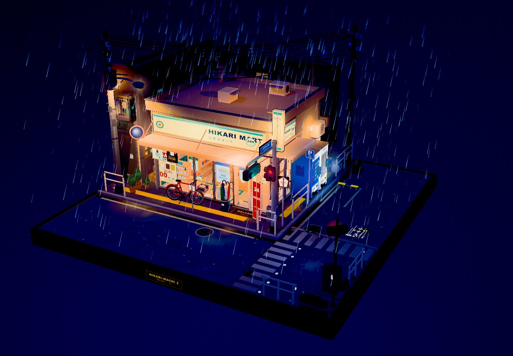
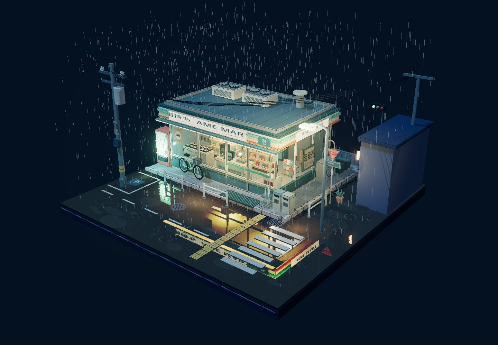
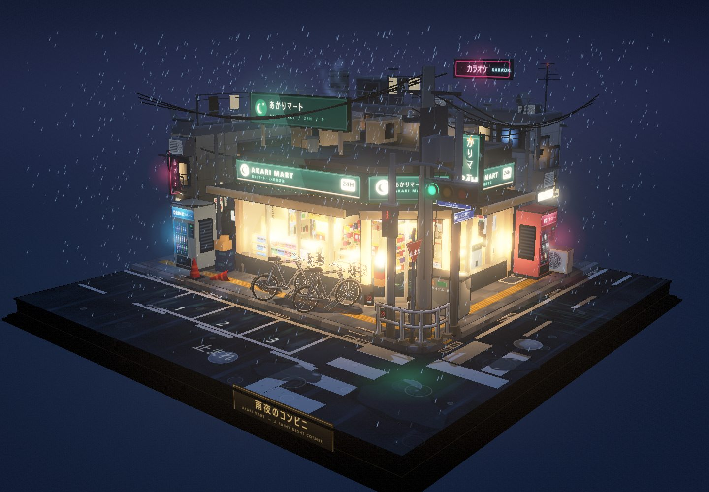

ONE PROMPT / THREE RUNS
雨夜便利店
首轮对照与 DSH 独立复测。保留每次原始成品，旋转、缩放，直接查看。
首轮双方各执行一次；后续新增 DSH 独立复测。所有成品均保留，不以第二次结果替换第一次。单次结果存在随机性。
三次测试对比总览
已确认信息与待核对数据分别标注| 项目 | DSH 第一次 ↗ | Codex ↗ | DSH 第二次 ↗ |
|---|---|---|---|
| 客户端 | 官方 DSH 客户端内核 / harness DSH 0.2.1-rc2 | 官方 Codex 桌面端具体客户端 / harness 版本 待核对 | 官方 DSH 客户端内核 / harness DSH 0.2.1-rc2 与第一次相同，另开独立工作区 |
| 模型 | DeepSeek-V4.1-Flash 1017 | GPT-6.1 Sol | DeepSeek-V4.1-Flash 1017 |
| 推理档位 | High | High | High |
| 耗时 | 待核对原界面显示 2 小时 15 分 30 秒 保留原记录，实际统计口径待核对 | 12 分 16 秒按会话起止核对，含发布尝试 | 约 1 小时 30 分钟用户补充的估时；精确起止 待核对 |
| 费用 | ¥3.1073第一次客户端任务费用记录 | ChatGPT Plus 额度估算5 小时已用 +16 个百分点（44% → 60%） 每周已用 +2 个百分点（7% → 9%） 单次人民币金额 待核对，未作折算 | 待核对第二次费用记录尚未提供 不沿用第一次费用 |
人民币费用与套餐额度采用不同统计口径，不能直接比较金额。约数与额度估算均按现有记录展示，未确认信息保留“待核对”标记。窄屏可左右滑动查看完整表格。
新增：DSH 第二次独立测试 · 约 1 小时 30 分钟 查看结果 ↓
完整提示词展开查看与复现 ＋收起 －
双方收到的原始提示词如下。没有额外要求仅制作单个 HTML 文件，也没有指定工程目录或交付格式。
请制作一个雨夜便利店街角小场景，不准使用blender，以第三视角观察整个场景，整体像一个可以自由拖拽、旋转、缩放观看的微缩三维模型 / 小型景观，没有任何UI界面元素。地面为一个完整的正方形底座，所有元素都搭建在这个底座上，构图紧凑、层次清晰，整体呈现出小巧、精致、可收藏的模型感。画面风格为三渲二，强调浓厚的日式二次元动画氛围，材质表现干净，轮廓明确，色彩柔和但富有夜景霓虹的层次感。场景主体是一处日式便利店街角，便利店位于底座的视觉中心，外部有典型的日式街角元素：便利店招牌、玻璃橱窗、自动门、屋檐雨棚、门口地垫、自动贩卖机、自行车、雨伞架、垃圾桶、路灯、电线杆、电线、路牌、街角护栏、停车位、排水沟、积水路面、反光斑马线、小巷入口、空调外机、小型公告栏或海报栏等。街道不需要太大，但要有明确的街角转折感，像日本动画里常见的夜晚社区一角。不要人物，但便利店内部一定要有足够内容，并且可以透过大面积玻璃窗清楚看到店内。店内可见典型便利店陈设，例如：整齐排列的货架、饮料柜、便当区、饭团和零食陈列、收银台、咖啡机、杂志架、宣传海报、店内灯箱、冰柜、关东煮柜台、地面导视、储物柜或后场门等。要让便利店内部显得明亮、温暖、真实、充实，与室外潮湿昏暗的雨夜形成鲜明对比，营造出非常典型的日式动画雨夜氛围。美术风格重点强调：高精细建模、三渲二卡通渲染、清晰的轮廓线、细腻但简洁的材质层次、湿润的夜景反光、暖色室内灯光与冷色雨夜街景对比、浓厚的二次元日常场景感。整体气质应偏向安静、治愈、带一点都市夜晚孤独感但依然温暖，像一幕被定格下来的日本动画街角场景模型。加入一些基础动效来增强生命力：持续降雨、屋檐滴水、地面积水波纹、便利店招牌或灯箱轻微闪烁、自动门偶尔开合、雨水沿玻璃滑落、街道路面积水反射灯光、远处交通信号灯微弱变化等。整体效果应像一个静止而精致的三维微缩世界，但带有恰到好处的细微动态，突出其三渲二、二次元、雨夜、便利店、街角、小巧精致的核心特征。

DSH · 第一次测试
- 客户端
- 官方 DSH 客户端内核 / harness 0.2.1-rc2
- 模型
- DeepSeek-V4.1-Flash 1017 · High
首次界面耗时 · 待核对
2 小时 15 分 30 秒
保留原显示值，统计口径待核对
花费 · 人民币
¥3.1073
仅对应第一次客户端费用记录

Codex 版本
- 客户端
- 官方 Codex 桌面端测试时最新版 harness
- 模型
- GPT-6.1 Sol · High
单次耗时
12 分 16 秒
花费 · 套餐额度
ChatGPT Plus
5 小时已用 +16 个百分点（44% → 60%）
每周已用 +2 个百分点（7% → 9%）
DSH · 第二次独立测试
03 / 新增记录
进入第二次测试场景 ↗在全新工作区重新测试，不干扰或替换第一次内容。仍由 DSH 自行选择生成模块化的完整项目。
- 客户端
- 官方 DSH 客户端内核 / harness 0.2.1-rc2 · 与首测相同
- 模型
- DeepSeek-V4.1-Flash 1017 · High与首测相同，仅工作区独立
第二次耗时
约 1 小时 30 分钟
来自本次补充记录
第二次费用
待核对
尚未提供，不沿用第一次费用
雨效问题再次出现：雨丝始终朝向相机，长轴跟随屏幕方向，俯视仍呈明显线形，未体现雨滴运动投影应有的缩短。
查看二测观察与俯视截图 ↗产出文件与复现
原始提示词没有要求只制作单个 HTML，也未限制工程结构。两次 DSH 都自行选择模块化完整项目，Codex 同样生成可构建工程。理解需求并选择适当的完成方式，也是测试的一部分；不能仅因自主选择完整工程，就认定对照不公平。
下载包含全部工程的仓库 ZIP ↓ · 三个工程均已独立重建，HTML 与各自原成品哈希一致。
人民币费用与套餐额度采用不同统计口径，不能直接做金额比较。Codex 耗时含本地完成后的发布尝试，不含后续单独要求的 GitHub 部署；详情见顶部比较记录。